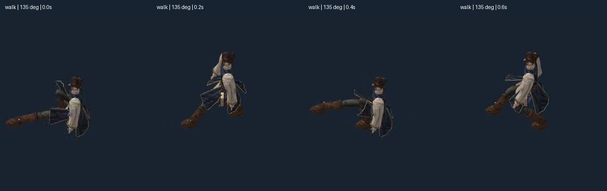
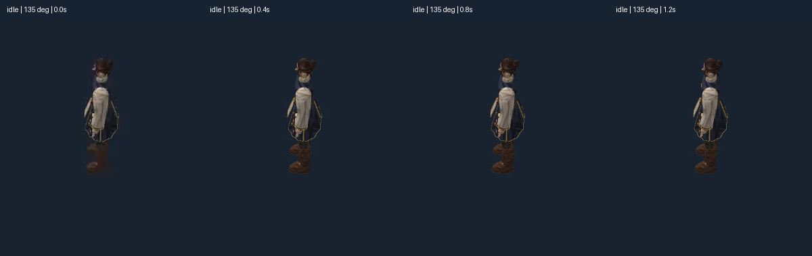
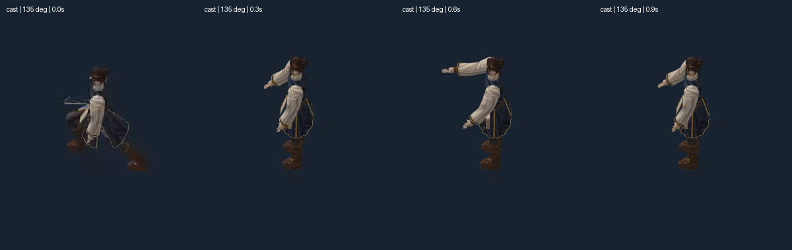
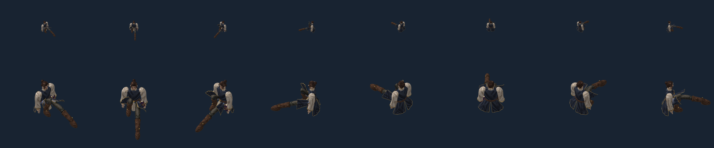

Motion art FAIL. Raster transfer PARTIAL: 1,290/1,296 comparisons pass. Godot is the shipping target; Pixi is the test harness. The accepted static F04 working appearance is preserved. These tests do not approve a finished walk, turns, all gear surface intersections or full production art.
Source mechanisms pass: 216 frames plus three endpoints; 2,248,911 sampled vertex comparisons within 0.0011mm; walk contact drift 0.0022mm. All 1,095 paired gear-core checks retain at least 7.52mm clearance. Full 3,456 framing cases pass after widening the diagnostic sheet.
Failures remain visible: old walk has split-leg poses, severe body-height changes and poor foot exchange. A source variable reused for stance duration/contact flags is the next diagnostic. Six cast-peak starter comparisons at135° exceed the2% pixel-error fraction bar (worst2.1984%). Neither threshold was relaxed.
0°,45°,90°,135°,180°,225°,270°,315° left to right. Top row50px body axis; lower150px. 2400×500 native geometry render, horizontally scrollable. Two cycles per video. World root advances at2m/s for walking; the camera tracks it here. Saved playback and deterministic216-frame audit are separate; this is not a production60fps guarantee.
Four successive video samples, extracted and cropped without resizing. The walk failure is in the source motion, not a3× bitmap enlargement.



Same diffuse lighting and depth policy, either GPU bone skinning or independently evaluated Blender geometry. The comparator measures representation agreement; it cannot make a bad source gait good.

Report · Receipt / limits · Source and every-frame bounds · All pixel results, including six failures · Frame hashes and playback timing · Preserved static-art checkpoint · Live Pixi controls (local HTTP required)